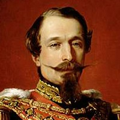

5 DE MAYO

"Las armas nacionales se han cubierto de gloria"
| Ignacio Zaragoza |
Nota:
Datos sobre la batalla de atlixco:
| Ignacio Zaragoza |
Datos sobre la batalla de atlixco:
En octubre de 1861, Francia, Inglaterra y España suscribieron la Convención de Londres, en la cual se comprometieron a enviar contingentes militares a México para reclamar sus derechos como acreedores por una deuda que ascendía a alrededor de 80 millones de pesos, aproximadamente eran 69 millones para los ingleses, 9 millones para los españoles y 2 millones para Francia.
Poco después de reunirse, los representantes de los tres países enviaron un ultimátum al gobierno mexicano en el que pedían el pago de sus deudas; de lo contrario, invadirían el país.Juárez, quien gobernaba a un país que apenas empezaba a levantarse de la postración económica, respondió con un exhorto a lograr un arreglo amistoso, y los invitó a conferenciar.
| Reproducción de los Tratados preliminares de la Soledad |
.-Benito Juarez(México):
.-Napoleon lll(Francia): 
.-Ignacio Zaragoza(México):
.-Charles Ferdinand(Francia):